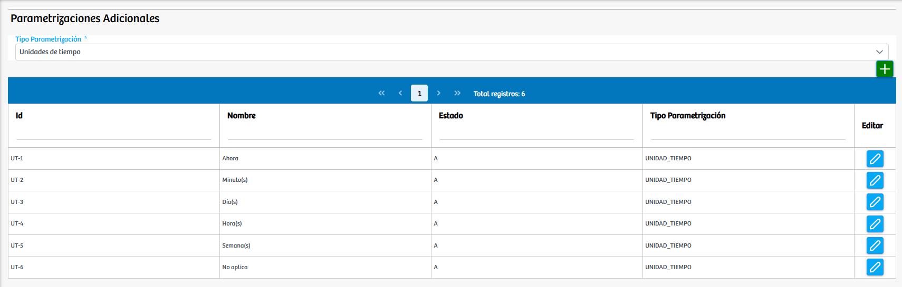
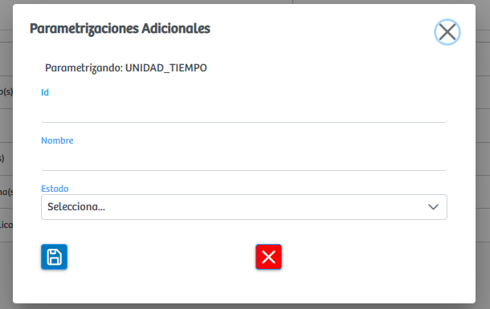

Modulos Sas-Web
Funcionalidades
Parametrizaciones Adicionales
El módulo Parametrizar Adicionales permite gestionar y mantener los diferentes valores auxiliares que complementan otros procesos de parametrización dentro del sistema hospitalario de SASWEB, tales como unidades de tiempo, unidades de administración y otros tipos de configuraciones adicionales necesarias para el correcto funcionamiento de los módulos clínicos. A través de un selector de tipo de parametrización, el usuario puede elegir la categoría que desea administrar, y el sistema carga automáticamente los registros asociados a ese tipo, mostrando información como el identificador, nombre, estado y tipo de parametrización.
Desde esta interfaz es posible crear nuevos valores adicionales, editar los existentes o controlarlos mediante estados activos e inactivos, garantizando así que cada formulario o proceso del sistema disponga de las unidades o parámetros requeridos para su correcta operación. En resumen, este módulo funciona como un catálogo centralizado de valores complementarios que alimentan diferentes funcionalidades del sistema, asegurando consistencia, trazabilidad y flexibilidad en la configuración hospitalaria.
